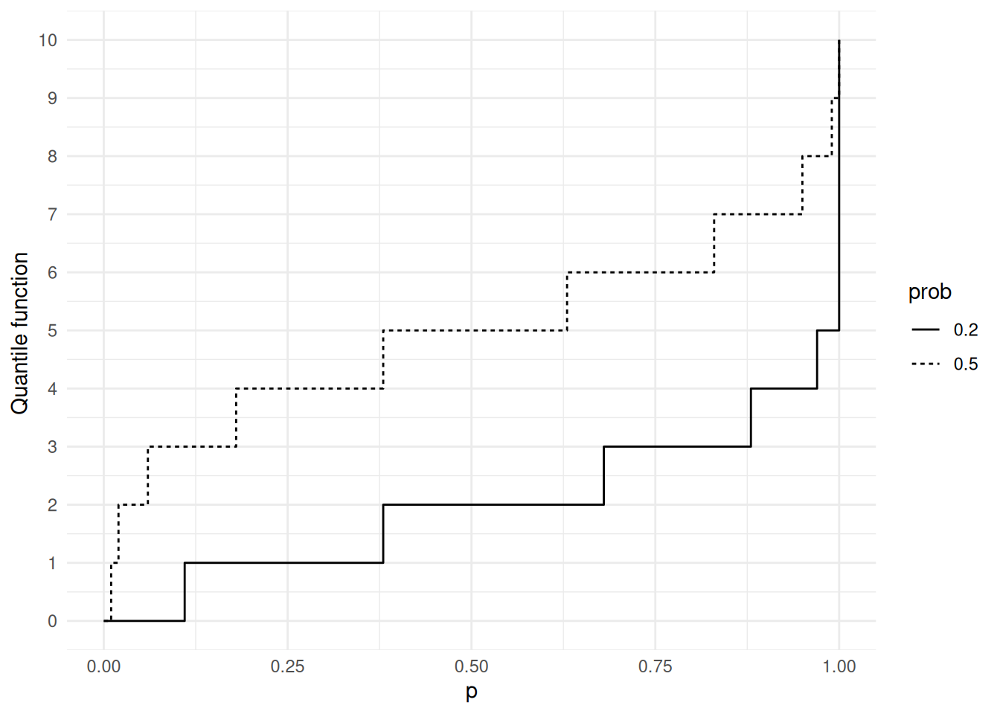
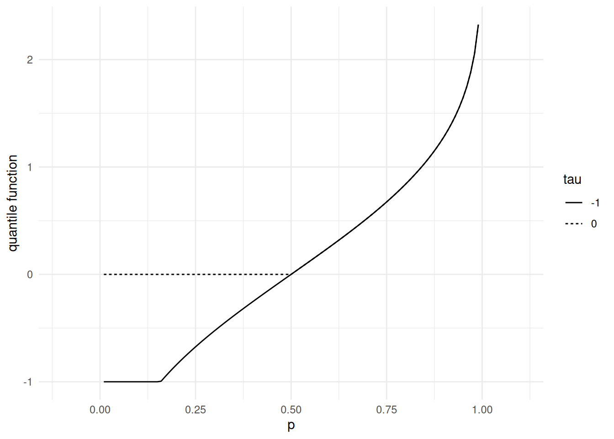
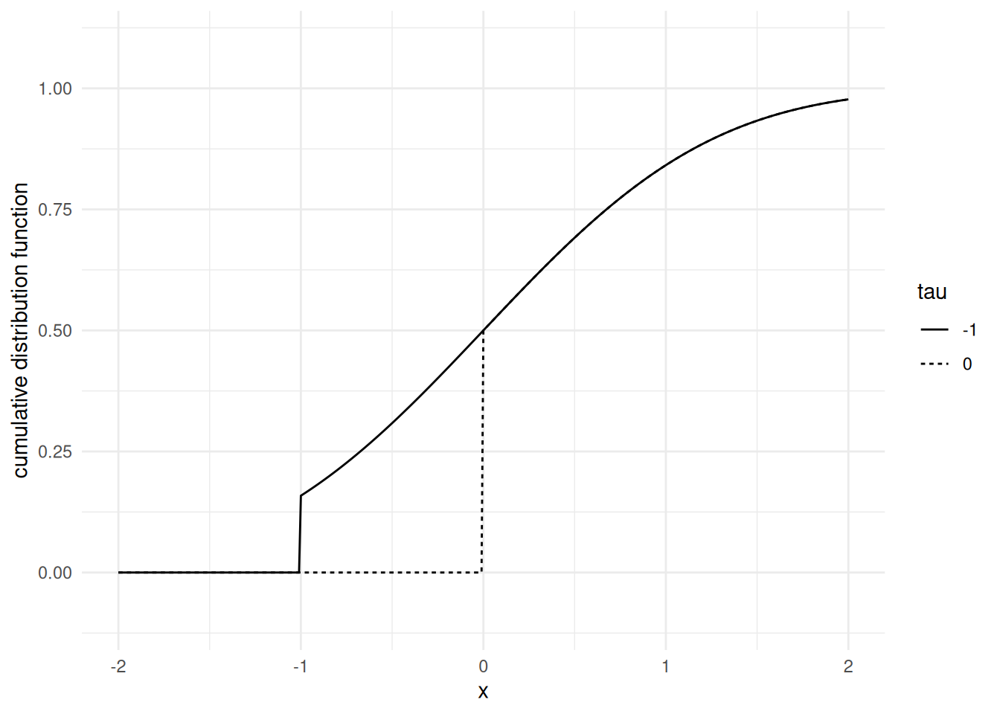
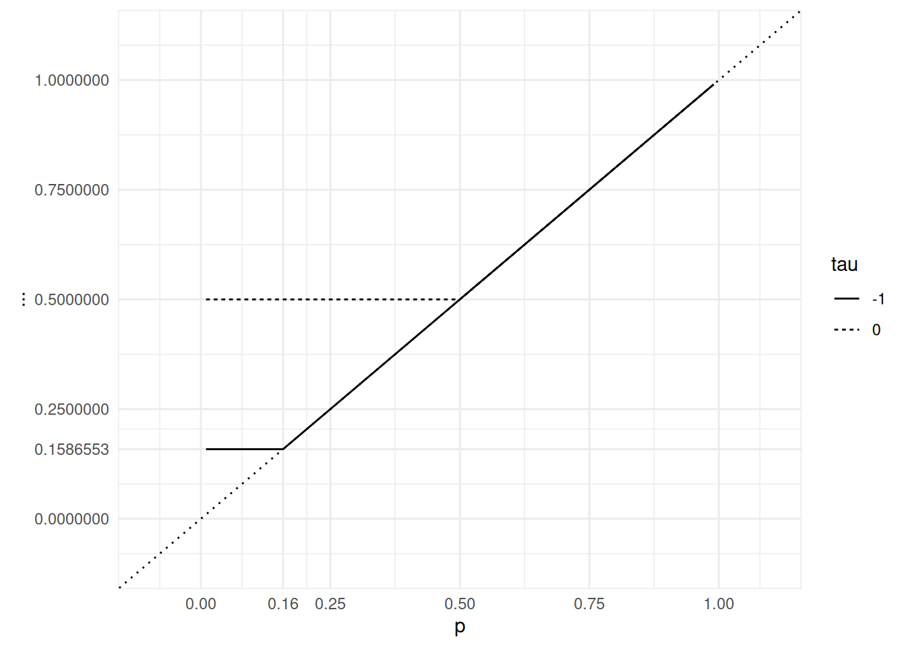
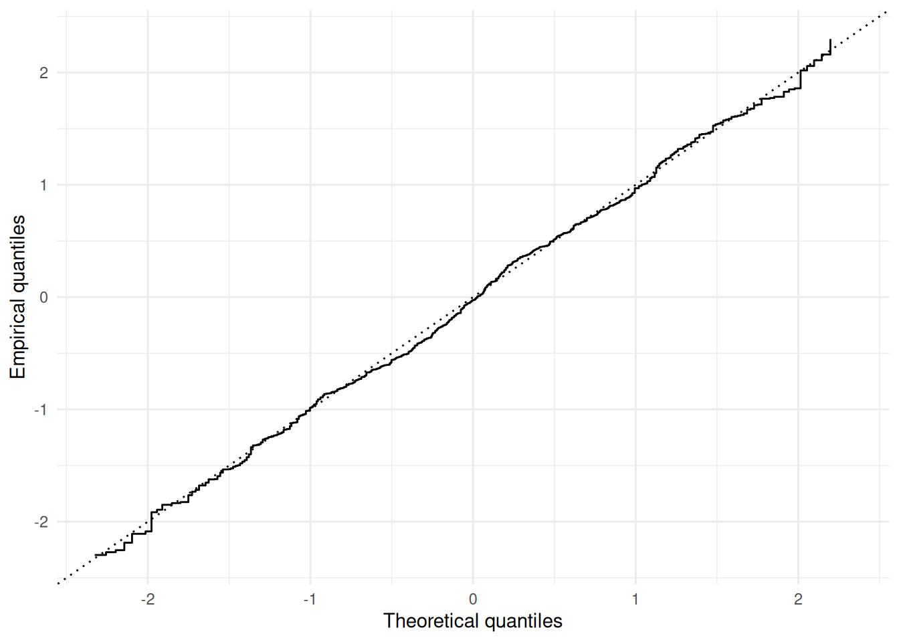

13 Quantile functions
So far we have seen several characterizations of probability distributions: cumulative distribution functions (CDFs), Laplace transforms for distributions supported on \([0, \infty)\), characteristic functions. The last characterization is praised for its behavior with respect to sums of independent random variables.
For univariate distributions, a companion to the cumulative distribution function is the quantile function. It plays a significant role in simulations, statistics and risk theory.
A cumulative distribution function \(F\) is non-negative, \([0,1]\)-valued, non-decreasing, right-continuous, with left-limit at any point. The cumulative distribution function of a diffuse probability measure is continuous at any point.
13.1 Definition
The quantile function \(F^{\leftarrow}\) is defined as an extended inverse of the cumulative distribution function \(F\).
The quantile function is non-decreasing and left-continuous. The interplay between the quantile and cumulative distribution functions is summarized in the next proposition.
Proof. According to the definition of \(F^\leftarrow\) if \(F (x) \geq p\) then \(F^\leftarrow (p) \leq x.\)
To prove the converse, it suffices to check that \(F \circ F^\leftarrow (p) \geq p\).
Indeed, if \(x \geq F^\leftarrow (p),\) as \(F\) is non-decreasing \(F (x) \geq F \circ F^\leftarrow (p)\). Si \(y = F^\leftarrow (p),\) par definition de \(y = F^\leftarrow (p),\) il existe une non-increasing sequence \((z_n)_{n \in \mathbb{N}}\) which converges to \(y\) such that \(F (z_n) \geq p .\) Mais as \(F\) is right-continuous \(\lim_n F (z_n) = F (\lim_n z_n) = F (y) .\) Hence \(F (y) \geq p\).
We just proved 1. and 2.
3.) is an immediate consequence de 1). Let \(p = F (x) .\) Hence \(p \leq F (x),\) according to 1.) this is equivalent to \(F^\leftarrow (p) \leq x,\) that is \(F^\leftarrow \circ F (x) \leq x.\)
4.) For every \(p\) in \(] 0, 1 [,\) \(\{ x : p = F (x)\}\) is non-empty (Mean value Theorem). Let \(y = \inf \{ x : p = F (x)\} =F^\leftarrow (p)\). According to \(1)\), \(F (y) \geq p\). Now, if \((z_n)_{n \in \mathbb{N}}\) is an increasing sequence converging to \(y\), for every \(n\), \(F (z_n) < p,\) and, by left-continuity, \(F (y) = F (\lim_n z_n) = \lim_n F (z_n) \leq p.\) Hence \(F (y) = p,\) that is \(F \circ F^\leftarrow (p) = p.\)
\(\square\)
13.2 Quantile functions and stochastic simulation
Proof. \[\begin{array}{rl} P\Big\{ F^\leftarrow(U) \leq x \Big\} & = P\Big\{ U \leq F(x) \Big\} \\ & = F(x) \, . \end{array}\]
\(\square\)
Remark 13.1. The quantile transformation works whatever the continuity properties of \(F\).
The quantile transformation has many applications. It can be used to show stochastic domination properties.
Example 13.1 In Figures 13.1 up to Figure 13.4, we illustrate quantile functions for discrete (binomial) distributions and for distributions that are neither discrete nor continuous. The quantile function of a discrete distribution is step function that jumps at the cumulative probability of every possible outcome. If a probability distribution is a mixture of a discrete distribution and a continuous distribution, the quantile function jumps at the cumulative probability of every possible outcome of the discrete component.




Let us conclude this section with an important observation. concerning the behavior of \(F(X)\) when \(X \sim P\) with cumulative distribution function \(F\).